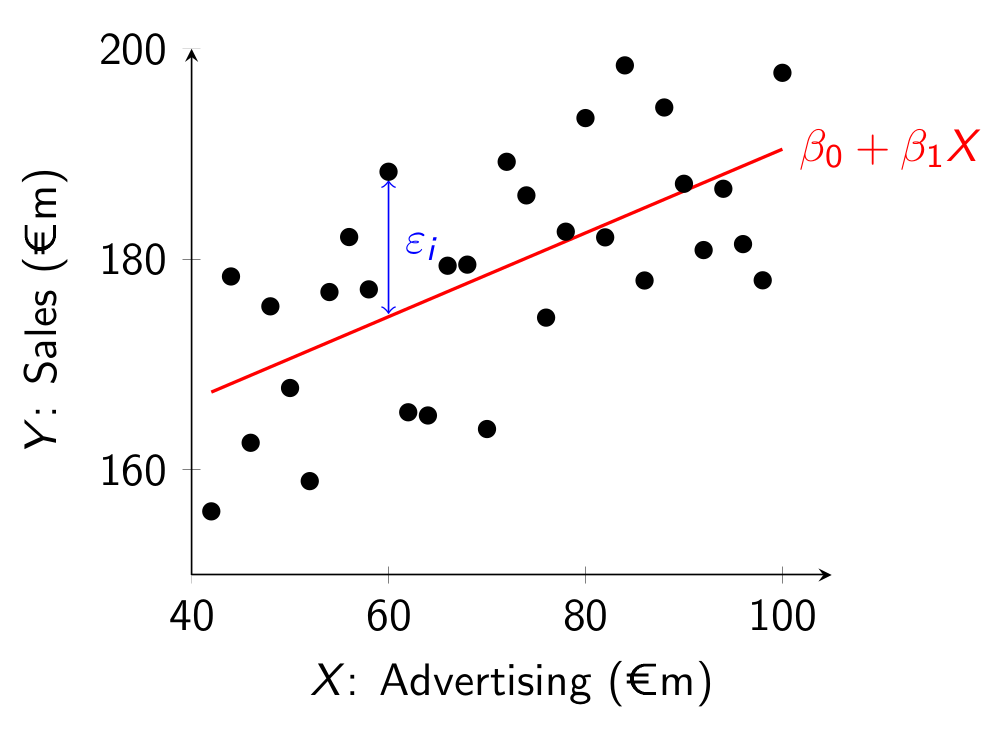
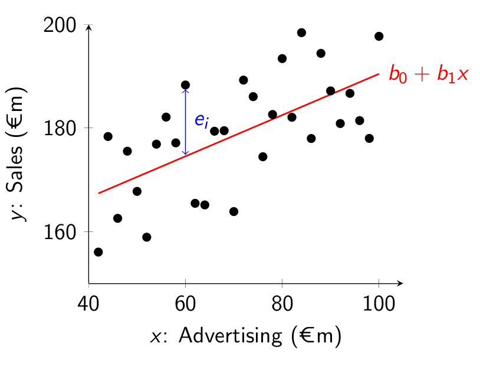

6 The Simple Linear Regression Model (SLR)
Using the correlation coefficient we learned how to measure the strength of the linear relationship between X and Y. We will now introduce the Simple Linear Regression model which will allow us to do the following:
- We will measure what percentage of the variation in Y is explained by the variation in X.
- We will estimate how much Y increases/decreases on average if X increases by 1 unit.
- We will quantify how precise these estimates are.
- We will learn how to predict Y for any value of X , and quantify how precise those predictions are.
6.1 The Model
We model Y as a linear function of X. What do we mean by this? It means we assume that Y is linearly related to X. We say that the values of Y are generated according to the line \beta_0+\beta_1 X, where \beta_0 is the intercept and \beta_1 is the slope. The intercept \beta_0 is what Y is when X=0 and the slope \beta_1 is how much Y increases when X increases by 1 unit. However, for each observation i in the data we won’t have that Y_i=\beta_0 + \beta_1 X_i exactly. In fact, the values Y_i will rarely be exactly on the line. Most values will be above it or below it. So we add an error term \varepsilon_i to the equation to account for this discrepancy. The model for Y_i is then: Y_i = \beta_0 + \beta_1 X_i + \varepsilon_i Graphically, the regression line is given by the red line in the following figure:  The dots represent different data points (X_i,Y_i) from the population, where X is on the horizontal axis and Y is on the vertical axis. In the figure we are trying to model sales as a linear function of advertising. The red regression line is the line that “best fits” the population cloud of points. Because the regression line doesn’t match the points exactly, we add an error term \varepsilon_i which is the vertical difference between the actual value of Y_i and the corresponding point on the regression line at X_i. The error is positive for points above the line and negative below it.
6.2 Estimation
How do we find the regression line that “best fits” this could of points? That is, how do we find the best \beta_0 and \beta_1? Intuitively we want a line that makes the errors as close to zero as possible. Because the errors can be positive or negative, we find the line that makes the sum of squared errors the smallest. Taking the square turns the negative errors to positive ones, and also makes the line try to avoid big errors (because when we square them, they get even bigger!).
We won’t cover the mathematics here, but it can be shown that in the population, the regression coefficients that minimize the sum of squared errors are given by: \beta_1 = \frac{\sigma_{X,Y}}{\sigma_X^2} \qquad \text{ and } \qquad \beta_0=\mu_Y - \beta_1 \mu_X where \mu_X and \mu_Y are the population means of X and Y.
With a sample dataset: \left(\left( x_1,y_1 \right), \left( x_2,y_2 \right),\dots,\left( x_n,y_n \right)\right) the sample regression coefficients, b_0 and b_1, can be calculated with the sample analogs of this: b_1 = \frac{s_{X,Y}}{s_X^2} \qquad \text{ and } \qquad b_0=\bar{y} - b_1 \bar{x}
6.3 Predicted Values and Residuals
For any value x_i, the predicted value for y_i is: \hat{y}_i=b_0+b_1 x_i where the hat ( \hat{} ) denotes that it is a predicted value. This is the value of the Y variable predicted by the model. The difference between the actual value of Y and the one predicted by the model given the corresponding value of the X variable is the prediction error, y_i-\hat{y}_i.
We call this prediction error the residual, and denote it by e_i: e_i = y_i-\hat{y}_i Graphically we can represent this in a similar way to above:

6.4 Interpreting Coefficient Estimates
In the next chapter we will learn how to estimate this model in R with real data. But for now, let’s consider a simple example and discuss how to interpret the estimates of the intercept, b_0, and the slope, b_1.
Suppose you have a sample of data on advertising (x_i) and sales (y_i), both measured in millions of euros. Suppose you estimate b_0=150 and b_1=0.4. The sample regression line is then: 150+0.4x
The intercept gives an estimate of the expected value of Y conditional on x=0. We denote this by \mathbb{E}\left[Y_i|x_i=0\right]. This means, it is an estimate of the amount of sales the firm will generate (in millions) if it has zero advertising. Thus if advertising is zero, then the model predicts sales to be €150m. However, if there are no observations for advertising near zero, this prediction is unreliable.
The slope gives an estimate of the expected change in Y when x increases by 1 unit. It is an estimate of: \mathbb{E}\left[Y_i|x_i+1\right]- \mathbb{E}\left[Y_i|x_i\right] If the X variable increases by one unit, the model predicts that the Y variable will on average increase by b_1 units. In this example, if advertising increases by €1m then on average sales increases by €0.4m. We write millions because the units for both variables are in millions.
6.5 Regression Slope Versus Correlation
One thing worth pointing out here is that the regression slope is not the same thing as the correlation coefficient. Let’s compare the formulas for both of them: \begin{split} b_1 &= \frac{s_{X,Y}}{s_X^2} \\ r_{X,Y}&=\frac{s_{X,Y}}{s_X s_Y} \end{split} The numerators for both are the same, but the denominators are different. So in general they will be different. The interpretation of the values also differ.
There is one special case when both will have the same value. This is when s_X=s_Y. If we standardize both the X and Y variable (subtract the mean and divide by the standard deviation), then the sample correlation coefficient and sample regression slope will have the same value. This is because after standardizing the resulting variables both have a standard deviation of 1.
6.6 Why Do We Call it Regression?
The word regression comes from the 1886 journal article Regression towards mediocrity in hereditary stature by Sir Francis Galton. After collecting data on the heights of many people and their children, he observed that while tall parents on average had tall children (and short parents on average had short children), on average the children’s heights were “less extreme” and closer to the mean height of the population than their parents. Thus people with extreme heights (tall or short) did not pass on their traits completely to their children. This phenomenon is called regression to the mean. He estimated what we now call the linear regression model to show this, and so that is why we call it the regression model.